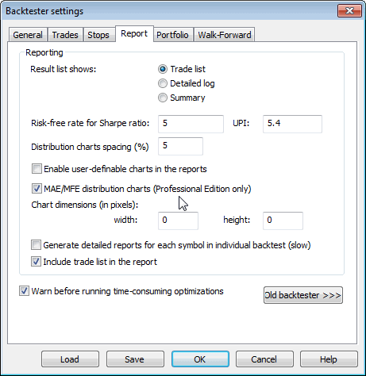

NEW BACKTESTER REPORT
Exposure % - Market exposure of the trading system calculated on a bar-by-bar basis. The sum of bar exposures divided by the number of bars. Single bar exposure is the value of open positions divided by portfolio equity.
Net Risk Adjusted Return % - Net profit % divided by Exposure %
Annual Return % - Compounded Annual Return % (CAR)
Risk Adjusted Return % - Annual return % divided by Exposure %
Avg. Profit/Loss - (Profit of winners + Loss of losers)/(number of trades)
Avg. Profit/Loss % - (% Profit of winners + % Loss of losers)/(number of trades)
Avg. Bars Held - Sum of bars in trades / number of trades
Max. trade drawdown - The largest peak to valley decline experienced in any single trade
Max. trade % drawdown - The largest peak to valley percentage decline experienced in any single trade
Max. system drawdown - The largest peak to valley decline experienced in portfolio equity
Max. system % drawdown - The largest peak to valley percentage
decline experienced in portfolio equity
Recovery Factor - Net profit divided by Max. system drawdown
CAR/MaxDD - Compound Annual % Return divided
by Max. system % drawdown
RAR/MaxDD - Risk Adjusted Return divided by Max. system % drawdown
Profit Factor - Profit of winners divided by loss of losers
Payoff Ratio - Ratio of average win / average loss
Standard Error - Standard error measures choppiness of the equity
line. The lower, the better.
Risk-Reward Ratio - Measure of the relation between the risk inherent in trading the system compared to its potential gain. Higher is better. Calculated as the slope of the equity line (expected annual return) divided by its standard error.
Ulcer Index - The square root of the sum of squared drawdowns divided by the number of bars
Ulcer Performance Index - (Annual profit - Treasury notes profit) / Ulcer Index. Currently, Treasury notes profit is hardcoded at 5.4. In a future version, there will be a user setting for this.
Sharpe Ratio of trades - Measure of risk-adjusted return
on investment. Above 1.0 is good, more than 2.0 is very good. More information http://www.stanford.edu/~wfsharpe/art/sr/sr.htm.
Calculation: First, the average percentage return and standard deviation of returns
are calculated. Then these two figures are annualized by multiplying them by the
ratio (NumberOfBarsPerYear)/(AvgNumberOfBarsPerTrade). Then the risk-free rate
of return is subtracted (currently hard-coded at 5) from the annualized average return
and then divided by the annualized standard deviation of returns.
K-Ratio - Detects inconsistency in returns. Should be 1.0
or more. The higher the K ratio, the more consistent return you may expect
from the system. The linear regression slope of the equity line multiplied by the square
root of the sum of squared deviations of the bar number divided by the standard error
of the equity line multiplied by the square root of the number of bars. More information:
Stocks & Commodities V14:3 (115-118): Measuring System Performance by
Lars N. Kestner

This window (accessible from the Report button in Automatic analysis window) provides very useful information about the performance of a trading system under test. The information included here can be customized using system test settings dialog.
Explanation of values:
Total net profit: This is the total profit/loss realized by the test. Includes
the closed-out value of the open position (if any).
Return on account: This is total profit/loss as a percentage of initial
investment.
Total commissions paid: The amount of commissions paid during trades.
Open position gain/loss: The closed-out value of an open position that existed
at the end of the test.
Buy-and-hold profit: The total profit/loss realized by the buy-and-hold strategy
(including commission).
Buy-and-hold % return: The total buy-and-hold strategy return as a percentage
of initial investment.
Bars in test: The number of bars tested (Overall summary shows the sum of the
number of bars in all symbols).
Days in test: The number of days between the first bar date and the last bar
date (overall summary shows the arithmetic average of the number of days across the
population of symbols under test)
System to buy-and-hold index: An index showing how much better or worse the
system is compared to a buy-and-hold strategy. A value of 0% means that the system
gives the same profit as a buy-and-hold strategy. A value of 200% means that the system
gives 200% more profit than a buy-and-hold strategy. A value of -50% means that
the system gives half of the gains of a buy-and-hold strategy.
Annual system % return: Calculated compound annual percentage return
of the system (*see note)
Annual B&H % return: Calculated compound annual percentage return
of the buy-and-hold strategy (*see note)
System drawdown: The largest equity dip experienced by the system (relative
to the initial investment).
B&H drawdown: The largest equity dip experienced by the buy-and-hold
strategy (relative to the initial investment).
Max. system drawdown: The largest point distance between an equity peak
value and the following trough value experienced by the system
Max. system % drawdown: The largest percentage distance between an equity
peak value and the following trough value experienced by the system
Max. B&H drawdown: The largest point distance between an equity peak
value and the following trough value experienced by the buy-and-hold strategy
Max. B&H % drawdown: The largest percentage distance between an equity
peak value and the following trough value experienced by the buy-and-hold strategy
Trade drawdown: The largest equity dip experienced by any single trade
(relative to the trade's entry price).
Max. trade drawdown: The largest point distance between an equity peak
value and the following trough value experienced by any single trade
Max. trade % drawdown: The largest percentage distance between an equity
peak value and the following trough value experienced by any single trade
Total number of trades: The number of trades (winners + losers)
Percent profitable: The number of winning trades compared to the total number
of trades, shown as a percentage
Profit of winners/Loss of losers: Total amount of money gained from winners or lost
from losers.
Total # of bars in winners/losers: The number of bars spent during winning/losing
trades
Largest winning/losing trade: The amount of the biggest winner/loser
# of bars in largest winner/loser: The number of bars in the biggest
winning/losing trade
Average winning/losing trade: The average of winning/losing trades
(sum of winners/losers divided by the number of winning/losing trades)
Average # of bars in winners/losers: The average number of bars in winning/losing
trades (total number of bars in winners/losers divided by the number
of winning/losing trades)
Max. consec. winners/losers: The largest number of consecutive winning/losing
trades.
Bars out of the market: The number of bars for which the system was completely out of the market (was neither long nor short). If you open and close the position during a single day, even if you have no open position at market open and no position at close, this day is NOT considered out of the market.
Interest earned: The total interest earned between trades. Note that AmiBroker simulates O/N (overnight) deposits. This means that if you closed the position on Monday and opened the next one on Tuesday, you earn interest for a single O/N deposit.
Exposure: Shows how much you are exposed to the market. It is a ratio of the bars in the market divided by the total number of bars under test. (The number of bars in the market is given by the total number of bars minus the bars out of the market)
Risk-adjusted ann. return: Shows the annual return of the system (*see note) adjusted (divided) by market exposure. If your system gained 10% over one year with an exposure of 50%, the adjusted return would be 20% (10%/0.5)
Ratio avg win/avg loss: The absolute value of the ratio of average winning
trade to average losing trade
Profit factor: The absolute value of the ratio of the profit of winners
to the loss of losers
Avg. trade (win & loss): The average trade profit calculated as the sum
of winners and losers divided by the number of trades.
*Note: Calculation method used for annual percentage returns:
Most of the software (including two of the most popular so-called professional packages) use a very simple annualization method based on the following formula:
simple_annualized_percentage_return = percentage_return * ( 365 / days_in_test );
Unfortunately, this method is wrong and very misleading since it would tell you that the annual return is 22% when your system earned 44% during two years. This value is too optimistic. In fact, the annual return in this case is only 20%: if your initial investment was 10000, you earn 20% during the first year so you then get 12000, and 20% the second year gives you 14400 (12000 * 120%). So, after two years you earned 44%, but annually it is only 20%.
AmiBroker is one of the few programs that calculates annual returns correctly and will give you the correct value of 20% as shown in the example above. The formula that AmiBroker uses for annual return calculation is as follows:
correctly_annualized_perc_return = 100% * ( (final_value/initial_value) ^ ( 365 / days_in_test ) - 1 )
where x^y means raising x to the power of y.
| Old backtester | New (portfolio) backtester | |
| System and trade drawdown calculations based on | Open/Close/H-L range (worst case), selectable in settings | Close price only (regardless of settings) - subject to change |
| Max. % trade drawdown | Calculated based on total equity | Calculated based on ACTUAL trade value at entry point. |
| Stats available | For all trades only | Separately for long, short, and all trades |
| Position Sizing | Based on individual symbol equity | Based on portfolio equity. PositionSize = -25; will enter 25% of current portfolio equity |
| Trade statistics | Include only closed trades; open trades are reported separately | Include all trades (closed and those still open at the end of the analysis period). Any open trades are always closed out at the 'close' price. |
| Exposure | calculated regardless of position size (no matter what the position size is; if a trade is taken for a particular bar, it assumes 100% exposure at that bar) | calculations now include (in 4.43.0) the total amount of open positions compared to total portfolio equity. Exposure is calculated on a bar-by-bar basis, so if only 50% of funds are in an open trade, then the exposure for this bar is 0.5. Then, individual bar exposures are summed up and divided by the number of bars to produce the exposure figure. This way, true market exposure is calculated. |
| Multiple security testing | N independent accounts (multiple single equity) | Portfolio equity common to all symbols under test |